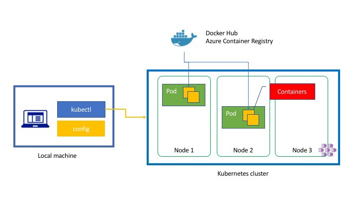

Goals
Goal 1: Get comfortable with the Agile Development process
Coming in to this work term I had no experience in an Agile development environment - I had an idea of what the foundational concepts were but no experience operating in that environment.
Our work was organized into 2-week sprints. Every workday would have a standup meeting - a 10 minute meeting where each member of the team would say what they were working on and what was blocking them, if any. Later on in the work term I gave demos of features we had worked on to demonstrate that we had met all the requirements. We would also have meetings to plan upcoming sprints and retrospectives - discussions on what went well/badly last sprint and how we could improve in the future.
Agile development is a widespread methodology in the industry and I consider this to be tremendously valuable experience to bring forward in my career.
Looking back halfway through the work term, I consider this goal to be accomplished as I came out from this work term with a concrete understanding of what Agile processes are both in theory and in practice.
Goal 2: Learn how to build and maintain Kubernetes applications
I made this goal halfway through my work term once I had gained more confidence and knowledge about my current role.
I had already set up and been maintaining a Kubernetes cluster as my development environment since the start of the work term. The cluster contained multiple pods interacting on many levels, so diagnosing problems was not a straightforward process and relies alot on prior experience with similar errors.
Determining and fixing the cause of an issue however gives good insight into how the different systems of the cluster interact with each other. Debugging a cluster error also really ingrains useful Kubernetes processes(checking pod logs, kubectl describe-ing a pod to get error messages) and a methodical approach to tackling unknown issues.
The initial setup of my development environment lasted about a week. I found this to be too long, so during the work term I tried different ways to decrease the time needed to spin up a dev environment. I created an OVA archive of a working cluster and used that to assist in onboarding. The OVA file proved to be a bit ponderous and difficult to update, so I experimented with using Vagrant to make a sharable config file that could boot a development cluster. By the end of my work term I had created a dev VM for each member of my team that didn't have one, and reduced the full setup time to around 2 days.
I met less success in building a Kubernetes application - The business architecture was already mostly complete so there was not much opportunity to build something new with business value. The daily operations of maintaining a dev cluster and experimenting with cluster setup is valuable real-world experience with Kubernetes, so I consider this goal complete, and look forward to working more with Kubernetes in future jobs.

Goal 3: Get comfortable with the Git development process
I had previous experience with Git in university, but that was limited to basic operations on a single repository with a single user (me). Working with multiple large Git repositories, with over 2 dozen developers working and making changes simultaneously, is an entirely different experience and a situation that is commonplace in the industry.

I worked with multiple Git repositories covering different aspects of the codebase. The repositories were shared across the different teams so there was a high traffic of commits - I regularly resolved merge conflicts between my local changes and upstream updates. Sometimes I needed changes from commits another team member had made - I added my team member's forks as remotes to pull commits when needed and encouraged the rest of my team to do the same.
By midway through the work term I was completely comfortable with the regular Git workflow(fork, make changes, pull request, merge). I had also gained familiarity
with more one off operations, like setting a separate repository as a remote for a fork or resetting while keeping the reset changes. I consider this goal to be achieved. I will say that the number of different operations you can do in Git only seems to grow as I learn more about it!
Goal 4: Improve my technical communications skills
A goal created midway through the work term, as I recognized I had a weakness in efficiently explaining technical situations and the reasoning behind some of my code changes. I often went into too much detail or didn't use concise terminology for explaining code, which made getting my idea across take much longer than it should have. Improving this has become a priority for me - The importance of being able to effectively communicate with your co-workers on issues can't be overstated.
Around this time a new co-op student joined my team - I considered this the perfect opportunity to work on technical communication. Explaining a concept to someone without the background experience is an excellent way to test your understanding and find areas in which you can improve.
Near the end of the work term I investigated on speeding up the setup of development environments using Vagrant, and demoed what I had created to the team. It was an excellent experience in 'selling' an improved methodology or new software - first explaining the problem, then demonstrating how the software solves that problem.
I didn't expect to be able to call this goal fully complete - improving is a continuous process. I do feel however that I have made progress on that this work term.
Goal 5: Become familiar with Agile Development tools
This goal was made at the start of my work term, before I had experience in Agile development. I had the idea that there were many specialized tools used in the Agile development. We did use Jira, which is a a combination of issue tracker and planning board. Beyond that though there were no tools we used that required specific training. I consider this goal technically achieved but would have made another goal had I known more about Agile development.